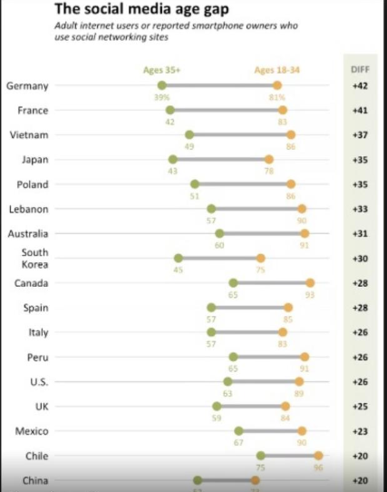

Uma amiga perguntou se eu poderia replicar o seguinte gráfico: 
Para fazer isso, eu precisava recriar os dados primeiro. Eu fiz isso como se os dados estivessem organizados da seguinte forma:
# Country Ages_35_plus Ages_18_34
# 1 Germany 0.39 0.81
# 2 France 0.42 0.83
# 3 Vietnam 0.49 0.86
# 4 Japan 0.43 0.78
# 5 Poland 0.51 0.86
# 6 Lebanon 0.57 0.90
# 7 Australia 0.60 0.91
# 8 South Korea 0.45 0.75
# 9 Canada 0.65 0.93
# 10 Spain 0.57 0.85
# 11 Italy 0.57 0.83
# 12 Peru 0.65 0.91
# 13 U.S. 0.63 0.89
# 14 UK 0.59 0.84
# 15 Mexico 0.67 0.90
# 16 Chile 0.75 0.96
# 17 China 0.52 0.73
# 18 India 0.48 0.69
# 19 Pais A 0.60 0.40
# 20 Pais B 0.50 0.50
Eu incluí Pais A e Pais B para que eu tenha um país com uma diferença negativa, e outro
com uma diferença de zero.
Dado isso, eu precisava fazer 4 coisas antes de começar:
1) Insirir uma quebra de linha em South Korea
2) Calcular as diferenças de idade
3) Classificar os países pelas diferenças de idade
4) Definir os nomes dos países como fatores para que possamos plotá-los na ordem correta.
# ************************************************************************* ----
# Pacotes ----
# ************************************************************************* ----
#install.packages("tidyverse")
library("tidyverse")
# ************************************************************************* ----
# Cores - A partir do Original ----
# ************************************************************************* ----
laranja <- "#e8ab5f"
verde <- "#a1ad62"
fundo_diferencas <- "#eef0e2"
cinza <- "#bbbbbb"
cinza_claro <- "#f4f4f4"
# ************************************************************************* ----
# Dados para Grafico de Pontos ----
# ************************************************************************* ----
# Adicionei dois paises: Pais A e Pais B e vou colocar um com diferenca igual
# a zero e o outro com a diferenca negativa para testar
base_original <-
data.frame(
Country = c("Germany", "France", "Vietnam", "Japan",
"Poland", "Lebanon", "Australia",
"South Korea", "Canada", "Spain", "Italy", "Peru", "U.S.",
"UK", "Mexico", "Chile", "China", "India",
"Pais A", "Pais B"
),
Ages_35_plus = c(0.39, 0.42, 0.49, 0.43,
0.51, 0.57, 0.60,
0.45, 0.65, 0.57, 0.57, 0.65, 0.63,
0.59, 0.67, 0.75, 0.52, 0.48,
0.6, 0.5
),
Ages_18_34 = c(0.81, 0.83, 0.86, 0.78, 0.86, 0.90, 0.91,
0.75, 0.93, 0.85, 0.83, 0.91, 0.89,
0.84, 0.90, 0.96, 0.73, 0.69,
0.4, 0.5
)
)
## A base original esta assim:
# Country Ages_35_plus Ages_18_34
# 1 Germany 0.39 0.81
# 2 France 0.42 0.83
# 3 Vietnam 0.49 0.86
# 4 Japan 0.43 0.78
# 5 Poland 0.51 0.86
# 6 Lebanon 0.57 0.90
# 7 Australia 0.60 0.91
# 8 South Korea 0.45 0.75
# 9 Canada 0.65 0.93
# 10 Spain 0.57 0.85
# 11 Italy 0.57 0.83
# 12 Peru 0.65 0.91
# 13 U.S. 0.63 0.89
# 14 UK 0.59 0.84
# 15 Mexico 0.67 0.90
# 16 Chile 0.75 0.96
# 17 China 0.52 0.73
# 18 India 0.48 0.69
# 19 Pais A 0.60 0.40
# 20 Pais B 0.50 0.50
## A partir disso, precisamos:
## 1) Quebrar o texto da South Korea
## 2) Pegar as diferencas
## 3) Ordenar pelas diferencas
## 4) Colocar o nome dos paises como fatores, para que possamos plotar os paises
## na ordem certa (maior diferenca para a menor)
# _________________________________________________________________________ ====
## \__Quebrar Texto
base_original_v2 <-
base_original %>%
mutate(
Country = ifelse(
Country == "South Korea",
# Verdadeiro:
"South \n Korea",
# Falso:
as.character(Country))
)
# _________________________________________________________________________ ====
## \__Pegar Diferencas
base_diff <-
base_original_v2 %>%
mutate(
Diferenca = Ages_18_34-Ages_35_plus
) %>%
# Ordenar (isso vai ordenar do menor para o maior, mas tudo bem, pois o ggplot
# inverte a ordem - coloca do maior para o menor na hora de plotar)
arrange(Diferenca, desc(Country)) %>%
# Criar fatores a partir do nomes dos paises ordenados
mutate(
Country.fact = factor(Country, levels = unique(Country))
)
## Com isso, a base fica assim:
# Country Ages_35_plus Ages_18_34
# 1 Germany 0.39 0.81
# 2 France 0.42 0.83
# 3 Vietnam 0.49 0.86
# 4 Japan 0.43 0.78
# 5 Poland 0.51 0.86
# 6 Lebanon 0.57 0.90
# 7 Australia 0.60 0.91
# 8 South \n Korea 0.45 0.75
# 9 Canada 0.65 0.93
# 10 Spain 0.57 0.85
# 11 Italy 0.57 0.83
# 12 Peru 0.65 0.91
# 13 U.S. 0.63 0.89
# 14 UK 0.59 0.84
# 15 Mexico 0.67 0.90
# 16 Chile 0.75 0.96
# 17 China 0.52 0.73
# 18 India 0.48 0.69
# 19 Pais A 0.60 0.40
# 20 Pais B 0.50 0.50
# _________________________________________________________________________ ====
## \__Agregar por Idade
## Para Plotar as Duas Idades na Mesma linha, temos que modificar a base
## Queremos deixar ela assim (mostrando apenas uma parte, pra nao ficar grande):
# Country Age_Group Age_Percent Diferenca
# 1 Germany Ages_35_plus 0.39 0.42
# 2 France Ages_35_plus 0.42 0.41
# 3 Vietnam Ages_35_plus 0.49 0.37
# 4 Japan Ages_35_plus 0.43 0.35
# 5 Poland Ages_35_plus 0.51 0.35
# 6 Lebanon Ages_35_plus 0.57 0.33
# 7 Australia Ages_35_plus 0.60 0.31
# 8 Germany Ages_18_34 0.81 0.42
# 9 France Ages_18_34 0.83 0.41
# 10 Vietnam Ages_18_34 0.86 0.37
# 11 Japan Ages_18_34 0.78 0.35
# 12 Poland Ages_18_34 0.86 0.35
# 13 Lebanon Ages_18_34 0.90 0.33
# 14 Australia Ages_18_34 0.91 0.31
# Note que o valor da diferenca esta duplicado por grupo
# Lidaremos com isso depois
# Para deixar a base do jeito acima:
base_diff_agregada <-
base_diff %>%
gather(
# Nome do Grupo
key = Age_Group,
# Nome da Variavel onde os percentuais de Idade entrarao
value = Age_Percent,
# Quais variaveis entrarao
Ages_35_plus, Ages_18_34
) %>%
# Reordenar as variaveis na base
select(Country, Country.fact, Age_Group, Age_Percent, Diferenca)
#___________________________________________________________________________####
# ************************************************************************* ----
# Grafico de Pontos ----
# ************************************************************************* ----
p<-
ggplot(
data = base_diff_agregada,
mapping = aes(
# Eixo Y
y=Country.fact,
# Eixo X
x=Age_Percent,
# Grupos com cores diferentes
# Se diferenca for zero, participa de um terceiro grupo
color = ifelse(Diferenca == 0, "zero", Age_Group))
) +
# Plotar as linhas entre pontos, por Pais
geom_line(
mapping = aes(group = Country),
color = cinza,
size = 2.5
) +
geom_point(
# tamanho do ponto
size=4,
# tipo de icone do ponto. importante ser o numero 19, senao nao tem como
# plotar as cores para os grupos diferentes
pch = 19
) +
# Adicionar os percentuais para cada ponto
geom_text(
# Tamanho da Letra
size = 4,
# Colocar um pouco abaixo dos pontos
nudge_y = -0.35,
mapping =
aes(
label =
# Se o pais eh Germany, plotar os numeros com o simbolo %
ifelse(Country == "Germany",
# Verdadeiro:
paste0(as.character(round(Age_Percent*100,0)),"%"),
# Falso
paste0(as.character(round(Age_Percent*100,0)))
),
color = ifelse(Diferenca == 0, "zero", Age_Group)
)
) +
# Adicionar "Legenda" acima apenas dos valores do primeiro grupo (germany)
geom_text(
# Tamanho da Letra
size = 4,
# Negrito
fontface = "bold",
# Colocar um pouco acima dos pontos
nudge_y = 0.6,
mapping =
aes(
label =
# Se o pais eh Germany, plotar a legenda
ifelse(Country == "Germany",
# Verdadeiro:
ifelse(Age_Group == "Ages_35_plus",
# Verdadeiro:
"Ages 35+",
# Falso:
"Ages 18-34"
),
# Falso
""
),
color = ifelse(Diferenca == 0, "zero", Age_Group)
)
) +
# Mudar Cores
scale_color_manual(
# Se diferenca for 0, plotar cinza, caso contrario, plotar com as
# cores por grupo
values = c(laranja, verde, "gray")
) +
# Mudar escala eixo X
scale_x_continuous(
# Limite de 0 a 1.2 (nao vai de 0 a 1 pq precisamos de um espaco apos o 1,
# para colocar os valores da diferenca)
limits = c(0,1.2),
# Mostrar texto a cada 25%
breaks = seq(0,1,.25),
# Mudar escala para percentual
labels = scales::percent
) +
# Aumentar escala eixo y para caber as legendas
scale_y_discrete(
expand = expand_scale(add=c(0.65,1))
) +
# Inserir Retangulo em Branco para delimitar a area onde ficarao os valores
# das diferencas
geom_rect(
mapping = aes(xmin = 1.01, xmax = Inf , ymin = -Inf, ymax = Inf),
fill = "white",
color = "white"
) +
# Inserir Retangulo para as diferencas
geom_rect(
mapping = aes(xmin = 1.05, xmax = 1.15 , ymin = -Inf, ymax = Inf),
fill = fundo_diferencas,
color = fundo_diferencas
) +
# Inserir Valores das Diferencas
geom_text(
# Negrito
fontface = "bold",
# Tamanho da Letra
size = 4,
# Cor
colour = "black",
# Posicao
mapping =
aes(
x = 1.1,
y = Country,
label =
# Para evitar valor duplicado da diferenca, plotar vazio para o
# primeiro grupo e plotar a diferenca apenas para o grupo Ages_18_34.
ifelse(Age_Group == "Ages_35_plus",
# Verdadeiro
"",
#Falso
# Se a Diferenca for igual a zero, nao colocar nenhum sinal.
# Caso contratio, se for Positiva, colocar sinal + na frente.
# Colocar sinal -, caso contrario
ifelse(Diferenca == 0,
# Verdadeiro:
paste0(as.character(round(Diferenca*100,0))),
# Falso
ifelse(Diferenca > 0,
# Verdadeiro
paste0("+",as.character(round(Diferenca*100,0))),
# Falso (nao precisa colocar o simbolo -)
paste0(as.character(round(Diferenca*100,0)))
)
)
)
)
) +
# Inserir Titulo das Diferencas
geom_text(
# Negrito
fontface = "bold",
# Tamanho da Letra
size = 4,
# Cor
colour = "gray",
# Colocar um pouco acima dos pontos
nudge_y = 0.6,
# Posicao
mapping =
aes(
x = 1.1,
y = Country,
label =
# Plotar acima apenas dos valores do primeiro grupo (germany)
ifelse(Country == "Germany",
# Verdadeiro
"DIFF",
#Falso
""
)
)
) +
# Titulo e Labels dos Eixos
labs(
title = "The social media age gap",
subtitle = paste0(
"Adult internet users or reported smartphone owners who \n",
"use social networking sites"
),
x = "",
y = ""
) +
# Mudar Fundo, Tamanho das Letras, Etc.
theme(
# Mudar Fonte de todos os textos
text = element_text(color = "#4e4d47", size = 14),
# Colocar nome dos Paises em Negrito
axis.text.y = element_text(face = "bold"),
# Separar mais o texto do eixo dos percentuais do grafico
axis.text.x = element_text(vjust = -0.75),
# Excluir ticks
axis.ticks = element_blank(),
# Excluir Legenda Original
legend.position = "none",
# Fundo Branco
panel.background = element_blank(),
# Linhas por Country
panel.grid.major.y = element_line(colour = cinza_claro, size = 1),
# Mudar Fonte Titulo
plot.title = element_text(face = "bold", size = 16),
# Mudar Fonte Sub-Titulo e Adicionar Margem
plot.subtitle = element_text(face = "italic", size = 12,
margin = margin(b = 0.5, unit = "cm"))
)
p
E o gráfico final: